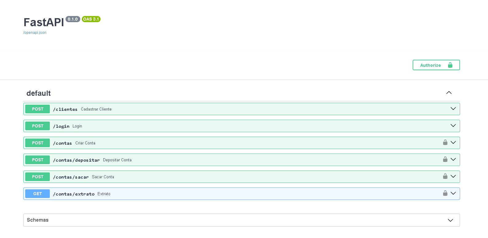
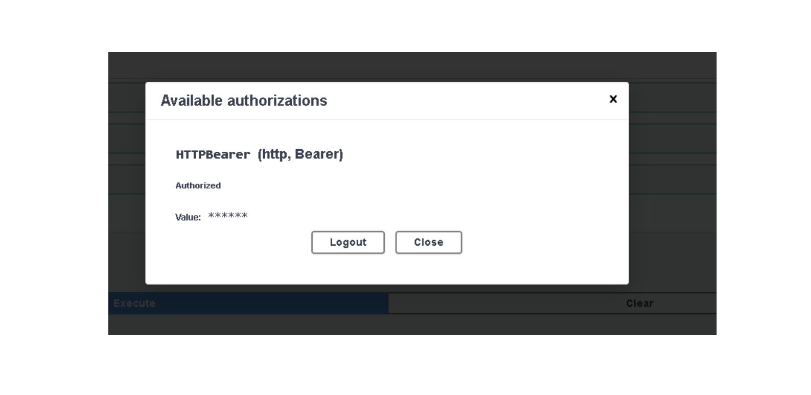
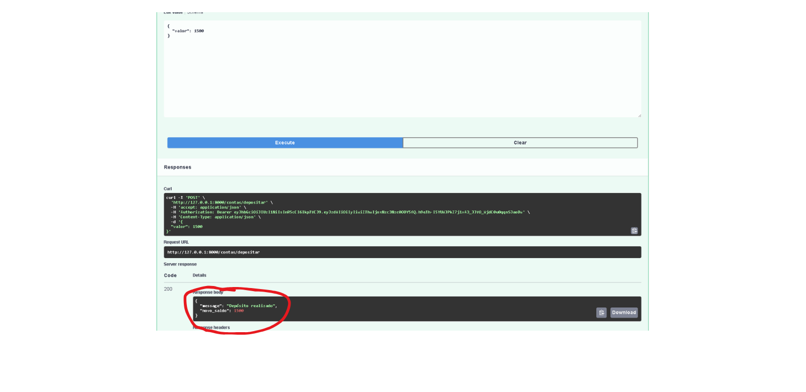
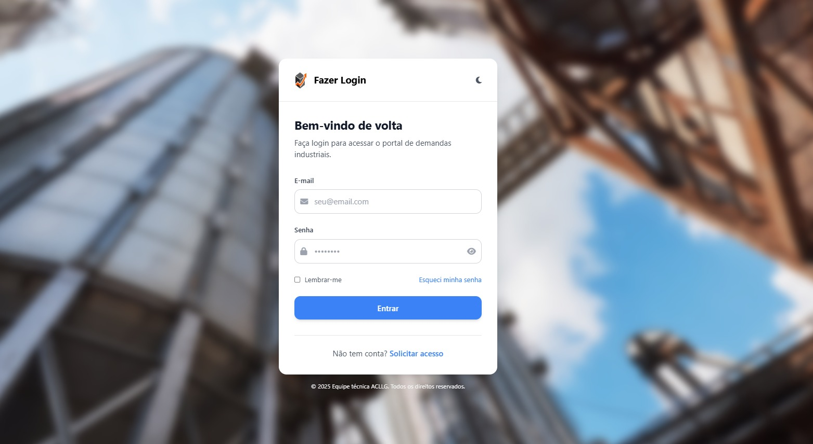
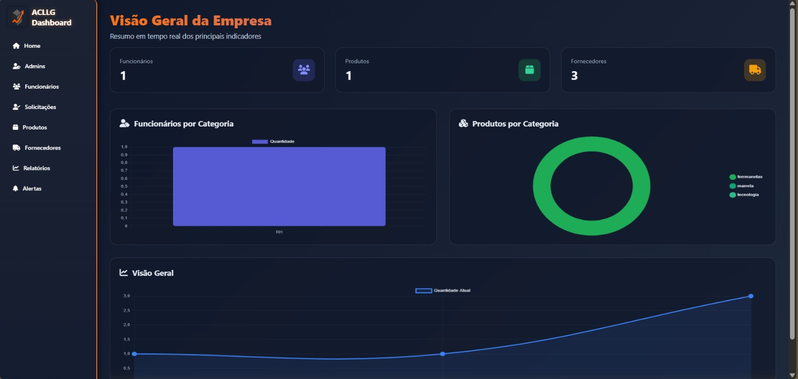
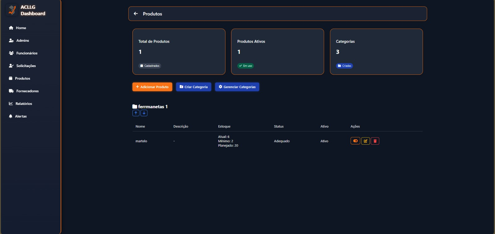

Sistema De Gestão de Estoque
Sistema completo de gestão de estoque com dashboard e moderação
Software Developer| Python • Java • SQLite • REST APIs • Segurança da Informação
Certificações
Bootcamp
$ python main.py
>> Iniciando servidor...
>> Conectando...
>> Status: Online ✓
>> Porta: 8000
>> Docs: /docs ✓
Software Developer apaixonado por construir soluções com tecnologia
Sou estudante de Ciência da Computação na Universidade Tiradentes (UNIT), técnico em Desenvolvimento de Sistemas pelo SENAI e entusiasta da tecnologia. Tenho interesse em entender como as coisas funcionam por trás dos sistemas e transformar ideias em soluções que realmente façam a diferença.
Minha trajetória na programação começou com a lógica de programação e o desenvolvimento de sistemas. Desde então, venho explorando diferentes tecnologias e construindo projetos acadêmicos e pessoais, principalmente nas áreas de desenvolvimento backend, APIs, bancos de dados e aplicações web.
Atualmente, também estou direcionando meus estudos para a Cibersegurança, buscando aprofundar meus conhecimentos sobre segurança da informação, sistemas, redes e proteção de ambientes digitais.
Além da parte técnica, sou vice-presidente da REDSEC, liga acadêmica de cibersegurança da UNIT. Essa experiência me permite participar da organização de atividades, colaborar em projetos e desenvolver habilidades de liderança e trabalho em equipe.
Aqui você encontrará meus projetos, habilidades e um pouco da minha trajetória no mundo do desenvolvimento. Estou sempre aberto a novos desafios e oportunidades de aprendizado!
[Logica de Programação, Redes, Banco de Dados, Boas Práticas, C#, Projetos Academicos]
Python
Java
JavaScript
HTML5
CSS3
FastAPI
SQLite
Git
GitHub






Sistema completo de gestão de estoque com dashboard e moderação
Além da formação acadêmica e técnica, invisto em certificações complementares. São cursos mais enxutos, mas que ampliam minha base prática em áreas específicas e me ajudam a aplicar o que aprendo nos projetos.
Bootcamp Luizalabs Python - 2ª edição
DIO | Digital Inovation One 2026Desenvolvimento de projetos com Python, SQLITE e API REST utilizando frameworks como FastApi, Poetry, PythonTest e entre outros. Versionamento de Código com Git e Github. Utilização de IA para criação de projetos e prompts.
Formação Profissionalizante em Cibersegurança — (13ª Edição)
Cisco Networking Academy | CCST 2026Curso de Sensibilização para a Segurança Digital, realizado pela Cisco Networking Academy. Desenvolvi conhecimentos básicos em segurança digital, métodos de ataque, vulnerabilidades, identificação de sinais de ameaças e boas práticas de proteção. Também foram abordados aspectos relacionados ao bem-estar físico e mental no uso de tecnologias digitais.